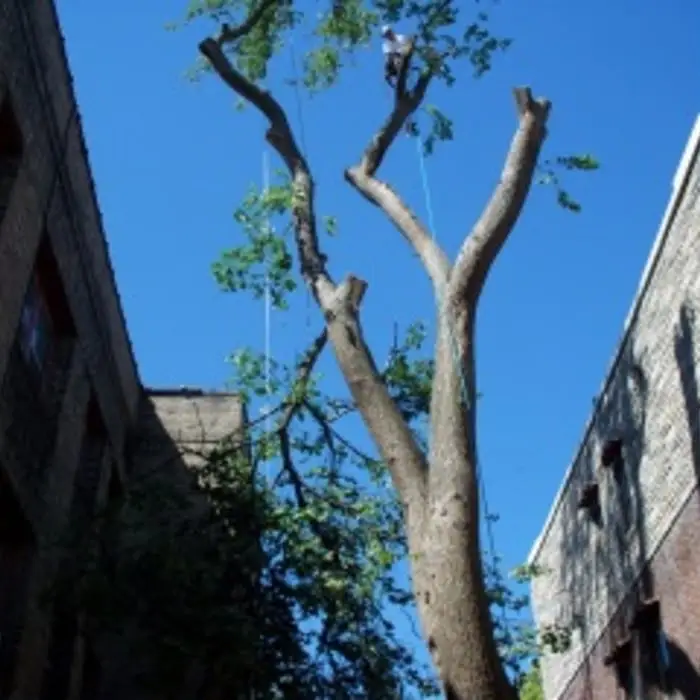

Stump Grinding
Stumps ground below grade so you can reseed, sod or plant.
Dead ash, leaning pines, overgrown boxelders or a tree that is simply in the way. We take trees down safely, protect your yard and haul everything away.
Taking down a tree is one of the most dangerous jobs a homeowner can try to do alone. A trunk that looks straight can carry its weight to one side, and a dead limb can snap without warning. Our crew removes trees in Blaine every week, from small ornamentals in front yards to 70-foot cottonwoods along back lot lines, and we plan every job around one goal: the tree comes down and nothing else gets hurt.
When you call, we come out, look at the tree, the drop zone and the access to your yard, and give you a free written quote. There is no obligation, and the price we quote is the price you pay.


Not every problem tree needs to be removed. Sometimes a good trimming takes care of it. But call for an inspection if you notice:
Most trees on private residential property in Blaine can be removed without a permit. Trees in the boulevard, the strip between the sidewalk or curb and the street, are a different story because they can fall under the city's rules. The City of Blaine has a page on boulevard tree maintenance. If your tree is near the street, we check before we start so there are no surprises.
If a tree is touching or tangled in a power line, the utility has to make the line safe before anyone works on it. We help you get that call made and come back as soon as it's clear.
Minnesota winters actually help with tree work. Frozen ground supports heavy equipment without rutting your lawn, leaves are off so we can see the structure of the tree, and it is the safest season to cut oaks without spreading oak wilt. If your removal isn't urgent, booking it for December through March is often the easiest option for your yard. Read our winter tree removal guide to learn more.
Price depends mostly on the tree's size, how close it is to buildings or lines, and how easy it is to get equipment to it. Our tree removal cost guide walks through what affects the price. The fastest way to get a real number is a free on-site quote. Call (763) 785-9779.
Most residential removals in Blaine take a few hours. A large tree over a house, or several trees on one property, can take a full day.
Yes. Branches are chipped, wood is hauled away unless you want to keep it as firewood, and the yard is raked and blown clean.
We use mats and smaller equipment where needed to protect your lawn and driveway. In winter, frozen ground makes this even easier.
The stump is cut close to the ground. Full stump grinding is a separate service we can do on the same visit.
Yes. We carry insurance for the work we do, and we are happy to show proof before the job starts.
Call or text for a free, no-obligation quote. We serve homeowners all across Blaine, MN.